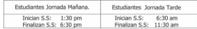

CAPÍTULO 6 PROYECTO DE SERVICIO SOCIAL
El soporte jurídico del presente proyecto está sustentado desde la ley 115 de 1994 art. 148, el decreto 1860 de 1994 art. 39 y el decreto 4210 de 1996 que en forma explícita plantea que el Servicio Social es requisito indispensable para optar el título de bachiller y cada institución es autónoma en la formulación de su proyecto.
De acuerdo con el PEI, cuyo lema es “Formación integral hacia la excelencia humana y laboral”, se consideró pertinente mirar al interior de la institución con el fin de detectar algunas problemáticas sentidas por la comunidad y plantear alternativas de solución que propendieran por la autoformación.
Este tipo de proyectos generan en la institución procesos que buscan el mejoramiento de la calidad educativa y optimizan la utilización de recursos. Así también contribuyen a la formación de los estudiantes, al brindarle herramientas y facilitar el desarrollo de capacidades y valores que le son útiles en la vida personal y laboral.
El estudiante al prestar el servicio social en su institución, específicamente en la jornada contraria, sirve de vínculo de integración entre las jornadas y el docente o funcionario encontrará en estos estudiantes auxiliares un apoyo a su labor académica o administrativa.
Artículo 34º. OBJETIVOS
- Lograr una mayor identidad de los estudiantes con su institución, al ser partícipes directos en su desarrollo.
- Desarrollar en los jóvenes el espíritu de servicio con su colegio y compañeros soportado en valores como solidaridad, respeto, responsabilidad y compromiso.
- Estimular el uso creativo del tiempo libre a través de la prestación de un servicio en pro de la comunidad educativa.
Artículo 35º. SUB PROYECTOS
El proyecto de servicio social está organizado en los siguientes subproyectos:
- Auxiliar de aulas especializadas: Laboratorio, Informática, Tecnología
- Auxiliar de procesos de aprendizaje en el aula
- Auxiliar de procesos administrativos: Pagaduría, secretaría, coordinaciones
- Apoyo a proyectos institucionales.
- Estudiantes tutores.
Artículo 36º. ORGANIZACIÓN DEL SERVICIO SOCIAL
- El servicio social lo realizan los estudiantes de grado 10° Y 11°
- La ubicación en los diferentes subproyectos se realiza de acuerdo a los intereses de los estudiantes y las necesidades de la institución. Esta debe mantenerse para facilitar la operatividad de la programación anual.
- El estudiante debe cumplir con 100 horas, en el proyecto seleccionado.
- El seguimiento del servicio social se efectúa a través de formatos que deben ser diligenciados por el docente o funcionario de la institución encargado del subproyecto.
- Para que se considere aprobado el servicio social el estudiante debe presentar en Orientación los formatos anteriormente mencionados, con un concepto favorable en la evaluación.
- Ante una o dos inasistencias injustificadas el estudiante tendrá la oportunidad de nivelar su proceso laborando dos jornadas adicionales por cada una.
- El estudiante que complete tres inasistencias injustificadas, o que haya cometido una falta grave perderá el servicio social, ante esta eventualidad, durante en el grado 11°, personalmente debe gestionar en una institución oficial el permiso para cumplir con este requisito, entregar comunicación escrita a orientación, donde aparezca la aceptación de la persona responsable de la institución, el horario y las funciones que desempeñará y solicitar el visto bueno de esta dependencia. El departamento de orientación verificará la veracidad de la información.
- El servicio social cumplido a cabalidad no se repite, así el estudiante no haya sido promovido.
- El Servicio Social Estudiantil Obligatorio se concibe como un componente curricular exigido para la formación integral de los estudiantes y hace parte integral del Plan de Estudios, y por ende, del Proyecto Educativo Institucional del Colegio.
- El Servicio Social Estudiantil Obligatorio tiene el propósito principal de integrar a los estudiantes a la comunidad para contribuir en su mejoramiento social, cultural, colaborando en los proyectos y trabajos que lleva a cabo, desarrollando valores de solidaridad, respeto, responsabilidad, y conocimientos sobre la realidad de su entorno social.
- El Servicio Social Estudiantil también tiene como propósito desarrollar en los estudiantes habilidades Sociales que les permitan adaptarse a futuros escenarios ya sean laborales y/o académicos, logrando influir eficazmente en la exigencia humana.
- Durante el grado Décimo de Educación Media, los estudiantes prestan el Servicio Social Obligatorio contemplado por la ley. Su intensidad mínima es de 100 horas. Las cuales serán desarrolladas en la jornada escolar contraria, ya sea en apoyo de aulas de CICLOS I y II o en dependencias de la Sede A como: (Coordinación Académica y de Convivencia, Secretaria, Aula de Informática y Tecnología) en las mismas instalaciones del colegio Brasilia Bosa; en los siguientes horarios.

Para que un estudiante considere culminado su proceso formativo en la Educación Media
deberá cumplir con las tareas propuestas por los docentes de cada jornada escolar que acompaña el proceso. Así mismo deberá entregar a la persona encargada de Servicio Social Estudiantil de cada jornada los respectivos formatos: (Hoja de asistencia con un record de 100h, Hoja de evaluación con las firmas respectivas de docente encargado, coordinadora y/o Orientadora).
Parágrafo: La prestación del Servicio Social Obligatorio es requisito indispensable para la obtención del título de Bachiller.
Los estudiantes no aprueban o pueden ser excluidos del Servicio Social Estudiantil Obligatorio, por una de las siguientes razones, además de aquellas a que haya lugar en Faltas del estudiante en el presente Reglamento o Manual de Convivencia Escolar.
- Completar tres fallas sin excusa justificada.
- Incumplir reiteradamente con el trabajo asignado.
- Irrespetar a cualquiera de las personas con quienes tiene relación en función de su Servicio Social.
- Presentarse en estado de embriaguez o bajo los efectos de otras sustancias psicoactivas.
- Las únicas personas que pueden autorizar los permisos son los superiores inmediatos, toda vez que el acudiente esté enterado y acompañe la salida, además del visto bueno de la persona encargada (Orientación).
- Los servidores sociales deben portar su uniforme conforme se establece en este manual de convivencia Escolar y se exige portar el carnet estudiantil.
- Los Estudiantes que inician su Servicio Social Estudiantil en cada una de las sedes deben permanecer en las instancias respectivas, en caso contrario deben tener permiso del docente encargado.
- El Servicio Social no es recuperable. El estudiante que incurra en alguna de las razones contempladas en el numeral 3.3 de este Manual de Convivencia, debe reiniciar su Servicio Social, previa reasignación de éste por parte de la persona responsable del Servicio Social y cumplidas las sanciones a que haya lugar.
Parágrafo: El Servicio Social no se repite cuando el estudiante no ha aprobado el grado.
- El Colegio brinda el acompañamiento de docentes por sede para cada uno de los estudiantes de Servicio Social de una manera oportuna y formativa en parámetros de respeto y cordialidad entre los mismos. Así mismo el área de Orientación por Jornada Velara para que los padres de Familia conozcan el trabajo desarrollado por sus hijos, el lugar donde les correspondió y las fechas de iniciación y culminación del mismo.
- Para cumplir con el acompañamiento oportuno y eficaz de los estudiantes que iniciaran Servicio Social Estudiantil se debe contar con la corresponsabilidad de los padres de Familia para llevar a feliz término los objetivos propuestos.
- En virtud de La legislación educativa vigente, se exonera del Servicio Social Estudiantil Obligatorio a los estudiantes que representan a Bogotá en certámenes deportivos a nivel nacional como internacional. Para ser objeto de este beneficio el estudiante debe presentar con anticipación a la Dirección Académica y Coordinación de éste la respectiva certificación de la Institución correspondiente para dar así trámite a la aprobación de éste favorecimiento.
39